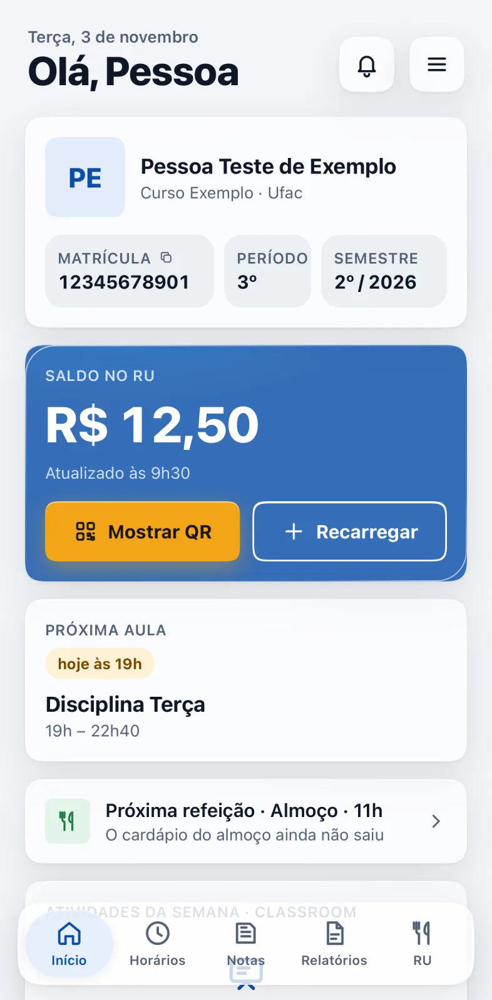
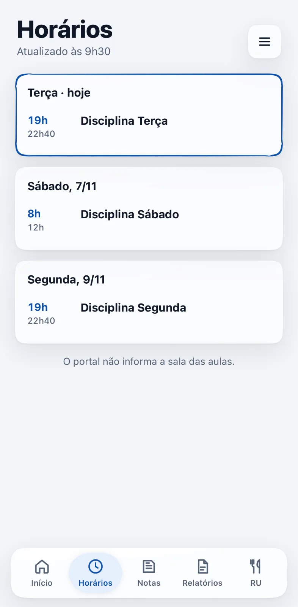
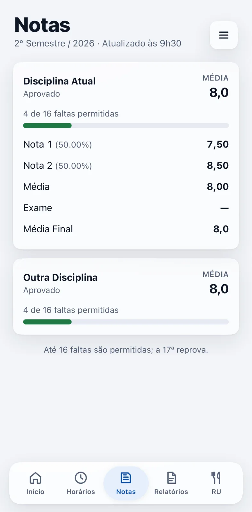
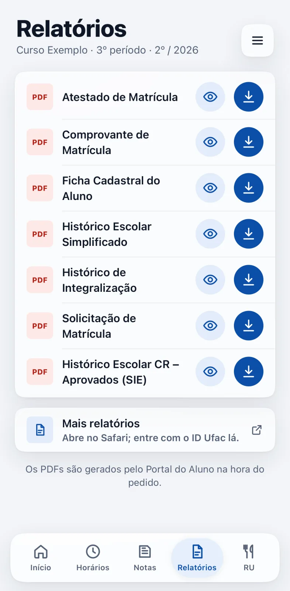
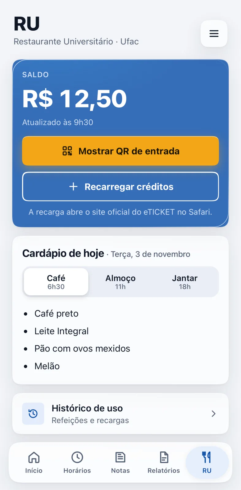
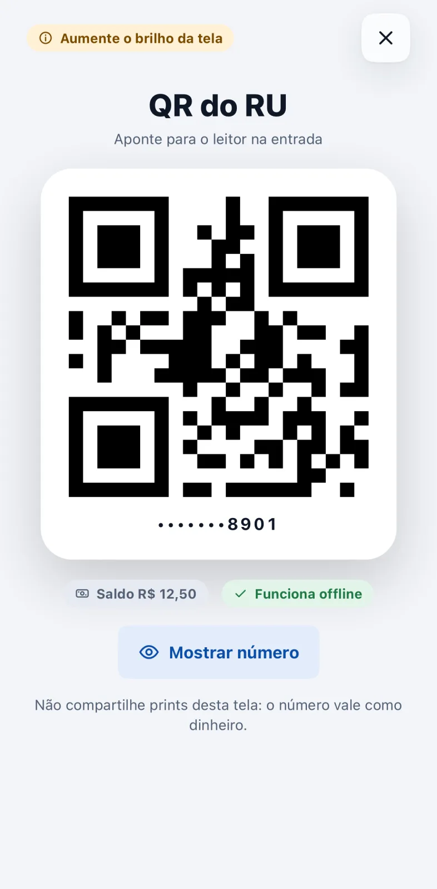

Seu cartão de aluno com matrícula, período e semestre, o saldo do RU, a próxima aula e a próxima refeição.
Aviso de feriado na véspera
Sua foto, guardada só no celular
Atividades do Google Classroom, se você conectar
No Android, aba Biblioteca com acervo e empréstimos
9:41

02 · Horários
Sua semana de aulas num relance
As aulas de cada dia em linha do tempo, com o dia de hoje em destaque. Sem caçar a grade no portal.
9:41

03 · Notas
Notas e faltas sem surpresa
O quadro completo de cada disciplina, com pesos, exame e média final, e um aviso antes de as faltas chegarem ao limite.
9:41

04 · Relatórios
Atestado e histórico sem abrir o portal
Os PDFs do Portal do Aluno, como atestado de matrícula e histórico escolar, para ver, salvar ou compartilhar.
9:41

05 · RU
Quanto tem de saldo e o que tem no almoço
O saldo do eTICKET e o cardápio de café, almoço e jantar. A recarga abre o site oficial do eTICKET.
9:41

06 · QR de entrada
Entre no RU mesmo sem sinal
O QR é gerado no próprio celular e funciona sem internet. No Android, o brilho vai ao máximo sozinho; no iPhone, a tela fica acesa enquanto o QR está aberto.
9:41

9:41
Baixar
Instale em um minuto
Entre com o seu ID Ufac: o CPF e a senha que você já usa no Portal e no eTICKET. As novas versões chegam pelo próprio app.
Android 7 ou mais novo
Android
Instale pelo arquivo .apk. O app avisa quando houver versão nova.
Toque em Baixar para Android e, na página que abrir, no arquivo ufac-mais-v….apk.
Abra o arquivo e permita instalar apps desta fonte.
O UFAC+ lê as mesmas páginas que você já acessa e guarda o resultado no seu celular. No iPhone, um repassador sem registros só leva os pedidos até a Ufac. Nenhum servidor guarda suas notas, sua senha ou seus dados do RU, e não há anúncios nem métricas.
Senha só para a Ufac
Sua senha só vai para a Ufac. Para o app entrar sozinho quando a sessão cair, ela fica cifrada no seu celular, e dá para desligar isso nas Configurações.
Dados no seu celular
Notas, horários, saldo e o número do QR ficam salvos no aparelho. Sair da conta apaga tudo do aparelho.
Sem anúncios nem rastreio
Nada de métricas de uso, anúncios ou venda de dados. Pagamento só no site oficial do eTICKET.
Código aberto
Todo o código está no GitHub, para quem quiser conferir o que o app faz e o que não faz.
O UFAC+ nasceu da vontade de não precisar abrir dois sites só para ver uma nota ou o saldo do RU. Ele junta o Portal do Aluno e o eTICKET do Restaurante Universitário em telas pensadas para o celular.
É um projeto independente e sem fins lucrativos, sem vínculo oficial com a Universidade Federal do Acre, o NTI, a Proaes ou o RU.
É um app oficial da Ufac?
Não. O UFAC+ é independente, feito por alunos. Ele só mostra, de um jeito mais prático, o que você já vê no Portal do Aluno e no eTICKET.
Quanto custa?
Nada. O app é gratuito, sem anúncios e sem compras dentro dele.
Por que não está na Play Store ou na App Store?
Publicar nas lojas é pago e exige um cadastro que não cabe num projeto pequeno. Por isso, no Android o app vem pelo arquivo .apk publicado no GitHub, e no iPhone ele é um app da web instalado pelo Safari.
Funciona para professores?
Sim. Na primeira tela, escolha Sou professor para ver turmas e horários do Portal do Professor.
Encontrei um problema. Como aviso?
Use Relatar um problema, nas Configurações do app, ou escreva para a gente no GitHub (aba Issues). Nunca mande CPF, senha, matrícula ou print do QR.
Créditos
Quem faz o UFAC+
AH
Arthur Henrique de Souza Cavalcante Ferreira
Idealizador e criador
Idealizou e criou o UFAC+, desenhou as telas e desenvolve o app para Android.
MB
Matheus Barros Cardoso
Colaborador · versão iPhone
Implementou recursos do app, levou o UFAC+ inteiro para o iPhone como app da web e colabora no site.